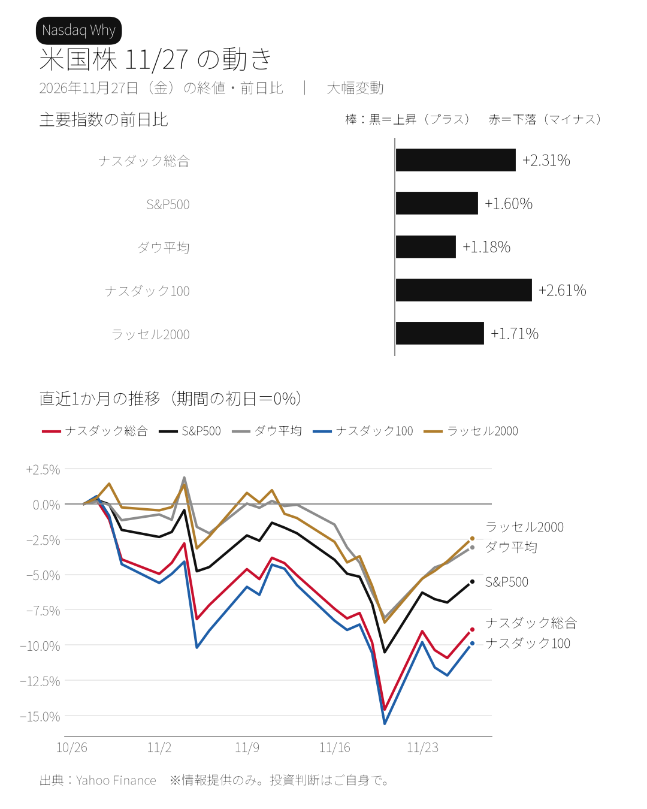
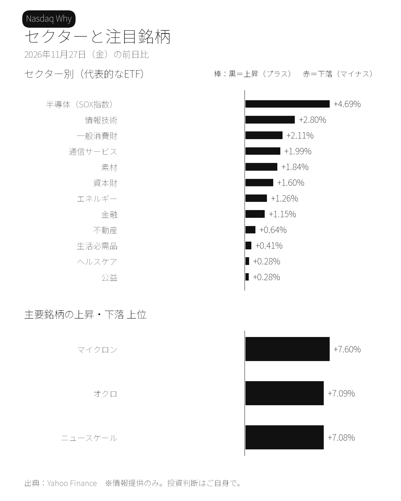

11/27の米国株：DRAM値下がり予想でも、マイクロン株はなぜ急伸した？
2026年11月27日（金）の米国市場（日本時間の翌朝更新） ｜ 大幅変動
今日の疑問
DRAM値下がり予想でも、マイクロン株はなぜ急伸した？
直前の急落で割安感が強まり、メモリー株に買い戻しが入ったことが大きい。DRAM不足や複数年の供給契約を伝える記事もあり、値下がり予想より品不足が意識された。値下がりが業績にどこまで響くかはまだ分からず、次にメモリー価格の実際の動きを確かめたい。

主要指数
| 名前 | 終値 | 前日比 | 騰落率 |
|---|---|---|---|
| ナスダック総合 | 24,129.50 | +543.70 | +2.31% |
| S&P500 | 7,297.49 | +114.71 | +1.60% |
| ダウ平均 | 50,774.94 | +591.99 | +1.18% |
| ナスダック100 | 26,726.39 | +679.49 | +2.61% |
| ラッセル2000 | 2,750.30 | +46.24 | +1.71% |
なぜ動いた？
- 直近の急落で割安感が強まったメモリー株に買い戻しが入り、マイクロンが急伸した。（出典：24/7 Wall St.、TradingView、JournalArta、Around Prague）
- 直前の大幅安の反動で、エヌビディアなどAI関連株に幅広く買いが戻った。（出典：Yahoo Finance、Share Talk）
- DRAM不足や複数年の供給契約が意識され、GF証券などの値下がり予想を打ち消した。（出典：Communications Today、TradingView、TweakTown）
- マスク氏が子ども向けに毎年株を寄付すると表明し、SpaceXが上昇した。（出典：CNBC）
深掘り：大きく動いた背景
感謝祭の休場明けの米株式市場は、半導体株を中心に大きく買い戻された。ナスダック総合は+2.31%、S&P500は+1.60%。半導体株指数（SOX）は+4.69%と上げが際立った。 けん引役はメモリー株だ。マイクロンは+7.60%と急伸した。前の取引日には、調査会社トレンドフォースがメモリー市場の見通しを引き下げ、株価は売られていた。この日も中国のGF証券がDRAM価格の予想を下げたが、買いの勢いは衰えなかった。 手がかりは割安感だ。直近の急落で、利益に比べた株価の水準が極めて低いとの指摘が相次いだ。供給面の支えもある。電子機器メーカーがDRAM不足への対応に追われているとの記事が出たほか、マイクロンやサムスン電子、SK hynixが顧客と複数年の契約を結んだことも伝わった。品不足が続くとの見方が、値下がり予想を上回った形だ。 別の見方もある。バロンズは株価上昇の陰でメモリー価格に悪い知らせがあると指摘した。ファーウェイがHBM（AI向けの高速メモリー）の開発を進めていることも、競争面の懸念材料になる。 今回の上げが売られすぎの反動なのか、需要への見方の変化なのかはまだ分からない。次に確かめたいのは、メモリー価格の実際の推移と、FOMCを前にした金利の動きだ。
セクター
全セクターが上昇した。半導体株指数（SOX）は+4.69%と突出し、情報技術も+2.80%。一般消費財は+2.11%。ヘルスケアや公益など守りのセクターは小幅高にとどまった。
- 騰落率の高い順：半導体（SOX指数） +4.69%、情報技術 +2.80%、一般消費財 +2.11%
- 騰落率の低い順：公益 +0.28%、ヘルスケア +0.28%、生活必需品 +0.41%

注目銘柄
マイクロンは割安感からの買い戻しで+7.60%。SpaceXはマスク氏の株寄付表明を受け+4.83%。オクロやニュースケールなど原子力株、テスラも上げたが、明確な材料は見当たらない。
- 上昇：マイクロン（MU）+7.60%、オクロ（OKLO）+7.09%、ニュースケール（SMR）+7.08%
半導体トピック
- GF証券がDRAM価格の予想を引き下げた（Seeking Alpha、GuruFocus）
- DRAM不足で、機器メーカーが少量ずつの調達を迫られている（TweakTown）
- 野村がAIサーバー見通しを上げ、TSMCのCoWoS増強を見込む（BigGo Finance）
関連市場
| 名前 | 終値 | 前日比 | 騰落率 |
|---|---|---|---|
| 米10年債利回り | 4.936% | +0.088pt | ― |
| ドル円 | 159.56 | +0.30 | +0.19% |
| 金先物 | 3,668.50 | +132.70 | +3.75% |
| 原油先物(WTI) | 83.08 | -0.60 | -0.72% |
| ビットコイン | 59,759.36 | -618.84 | -1.02% |
米10年債利回りは上昇し、4.936%。ドル円は円安・ドル高に振れた。金先物は+3.75%と大きく上げ、原油とビットコインは下げた。いずれも明確な材料は見当たらない。
今週の振り返り
- ナスダック総合：週間 +6.68%
- S&P500：週間 +5.60%
- ダウ平均：週間 +5.46%
- ナスダック100：週間 +6.78%
- ラッセル2000：週間 +6.53%
今週の米株式市場は、大きく値を戻す週になった。週間ではナスダック総合が+6.68%、S&P500が+5.60%、ダウ平均が+5.46%。小型株のラッセル2000も+6.53%と堅調だった。 背景には、直前の急落からの反動がある。Yahoo Financeは、巨額の時価総額が吹き飛んだ売りから一転して急反発したと報じ、エヌビディアやマイクロン、SpaceXの戻りを挙げた。 主役は半導体、とりわけメモリー株だ。週半ばには調査会社の見通し引き下げでマイクロンが売られる場面もあった。それでも週末には割安感からの買いが一気に強まり、GF証券の値下がり予想も跳ね返した。 米10年債利回りは週末に上昇し、金も大きく買われたが、明確な材料は見当たらない。来週以降は、値下がり予想と品不足の声が交錯するメモリー価格と、FOMCに向けた金利観が焦点になる。
今後の注目
- 12/9（水） FOMC（米連邦公開市場委員会）の金融政策発表と、金利の行方（公式発表）
- DRAM価格をめぐる、調査会社の値下がり予想と品不足の声の行方（Benzinga、TweakTown）
- ファーウェイが計画する、HBM（AI向け高速メモリー）の設計公表（TechNode）
出典（見出し）
- 24/7 Wall St.：SanDisk Jumps 10% as Investors Return to Beaten-Down Memory Stocks; Micron and SK Hynix Rise 6% Despite TrendForce DRAM Warning（記事）
- TradingView：AI Chip Stocks Roar Back -- Sandisk and Micron Lead the Rally（記事）
- JournalArta：Micron Share Price Surges 7.6% in Afternoon Trading as Memory Stocks Rally（記事）
- Around Prague：Why Is Micron Stock Up Today? Shares Jump 6.4% to $639.70 as Memory Stocks Rebound After November Selloff（記事）
- Yahoo Finance：Stocks snap from a $6 trillion washout to a $3.5 trillion surge as Nvidia, Micron, and SpaceX bounce back（記事）
- Share Talk：Nasdaq Futures Surge 2.7% as Nvidia, Micron and SanDisk Lead Global AI Stock Recovery（記事）
- Communications Today：Micron, Samsung, SK Hynix strike multiyear memory deals（記事）
- TradingView：Micron Stock Jumps Despite GF Securities Slashes DRAM Price Estimates（記事）
- TweakTown：DRAM shortage pushes electronics makers to set up 'war rooms' and buy as few as five chips at a time（記事）
- CNBC：SpaceX shares jump over 4% amid tech rally and after Musk says he will expand on Trump Account share donations（記事）
- Seeking Alpha：Micron, SK Hynix, Samsung in focus as GF cuts DRAM prices for 2027 (MU:NASDAQ)（記事）
- GuruFocus：GF Securities Cuts DRAM Price Forecast, Impacting Micron Technol（記事）
- BigGo Finance：Nomura Raises AI Server Outlook; TSMC's CoWoS Capacity Seen Up 80% by 2027（記事）
- Benzinga：Micron CEO Warns of Memory Shortages. TrendForce Isn't Convinced - Micron Technology (NASDAQ:MU)（記事）
- TechNode：Huawei plans to unveil HBM design to challenge Samsung and SK hynix（記事）
データ：Yahoo Finance
📝 note でも読めます（図つき・まとめ）：note.com/nasdaqwhy